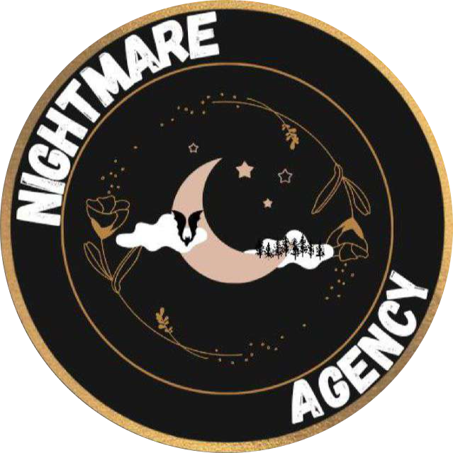

Mes réalisations
Découvrez mes projets personnels et professionnels :
Réalisations personnelles
Créateur de contenu sur YouTube
31 mars 2016 - Présent
Production de vidéos axées sur le militaria, les jeux vidéo et les vlogs de voyage. J'ai développé mes compétences en montage vidéo, gestion de communauté et storytelling pour partager des contenus engageants auprès de mes abonnés.

Streamer sur Twitch
29 avril 2018 - Présent
Animation de sessions de streaming en direct axées sur les jeux vidéo relaxants et le militaria. Cette expérience m'a permis de maîtriser les techniques de diffusion en direct, d'interagir en temps réel avec une audience et de créer une atmosphère conviviale.

Formation d'une équipe eSport (FrTFC)
2021 - Présent
Depuis 2021, j'ai dirigé la création d'une équipe eSport amateur dédiée au jeu War Thunder. Cette expérience m'a permis de développer mes compétences en leadership, coordination et stratégie, tout en renforçant les liens au sein d'une communauté.
Streamer sur Kumu Live
2025 - Présent
Streamer sur Kumu depuis janvier 2025, je suis membre de  Nightmare Agency. Grâce à mon agence, j’ai pu m’ouvrir davantage et évoluer dans un environnement qui encourage la créativité et l’échange avec une communauté active.
Réalisations professionnelles et universitaires
Étude des Usages de l'IA à l'IUT
30 Novembre 2023 - 17 Janvier 2024
Dans le cadre d'une enquête menée auprès des membres de l'IUT Paris - Rives de Seine, nous avons analysé les différences d'usages et de perceptions de l'intelligence artificielle en fonction des statuts et départements.
Ce projet a permis de croiser des données quantitatives et de tirer des conclusions sur l'intégration de l'IA dans l'enseignement supérieur.

Analyse Épidémiologique des Syndromes Grippaux
26 Novembre 2024 - 10 Janvier 2025
Dans le cadre d'une mission universitaire, j'ai collaboré à une analyse approfondie des données épidémiologiques en utilisant des modèles statistiques et des séries temporelles pour étudier les taux d'incidence des syndromes grippaux. Ce projet m'a permis d'appliquer des compétences avancées en Python, analyse de données et visualisation.
Télécharger le rapport Télécharger la fiche de mission
Analyse des ouvertures aux échecs de haut niveau
17 Decembre 2024 - 15 Janvier 2025
Projet d'analyse des ouvertures aux échecs de haut niveau. L'objectif était de déterminer les tendances stratégiques des ouvertures et leur impact sur les performances des joueurs.
Télécharger la fiche résultat
Assistance à la mise à jour du Plan d’Occupation des Sols et à l’évaluation des risques climatiques et de catastrophes pour la municipalité de Kalibo, Philippines.
28 Avril 2025 - 11 Juillet 2025
Le but principale etant la mise a jour du profil ecologique de la municipalite pour l'annee 2024 en utilisant la base de donnee de 2022, un profil essentiel pour visualiser au mieux les avancees et les amelioration sur 2 a 3 ans. Le travail principale consistant a extraire les bonne donnee avec le bon filtrage (si necessaire), la retransciption sous forme de tableau et la preparation de visuelle pour les differentes conferences municipale, regional...
Rapport de Stage (anglais)